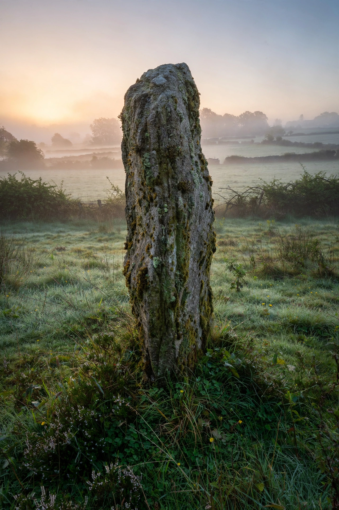

A menhir (from Brittonic languages: maen or men, "stone" and hir, "long"), also called a standing stone, orthostat, or lith, is a large upright stone, emplaced in the ground by humans, typically dating from the European middle Bronze Age. They can be found individually as monoliths, or as part of a group of similar stones. Menhirs vary widely in size but are generally uneven in shape and squared, often tapering towards the top.

Menhirs are found across much of Europe, especially in Brittany and the British Isles, but also in Africa and Asia. The purpose of menhirs remains debated: proposed functions include territorial markers, astronomical alignments, burial markers, and elements of ritual or fertility practices. The largest known menhir, the Grand Menhir Brisé at Locmariaquer in Brittany, once stood around 20 metres tall before breaking into four pieces. The alignments of Carnac in Brittany include more than a thousand menhirs arranged in rows over several kilometres.
The word menhir was adopted from French by 19th-century archaeologists from the Breton language, though its use gained popularity through Théophile Corret de la Tour d'Auvergne. In popular culture, menhirs are famous as the stones hurled and carried by Obelix in the Asterix comics.